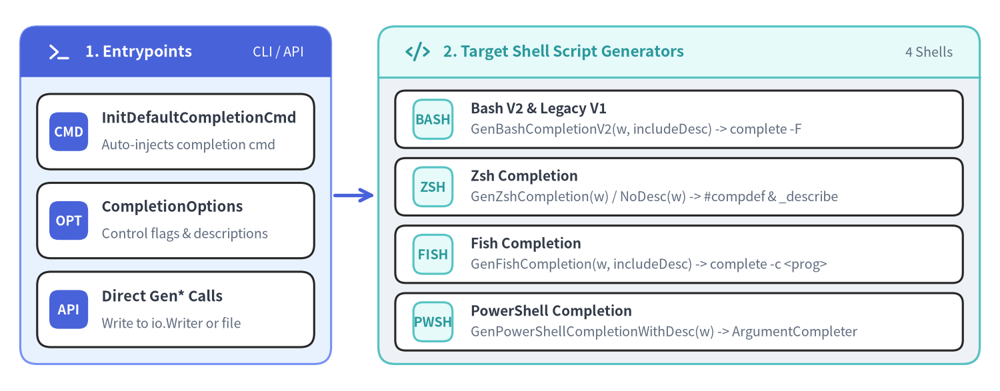
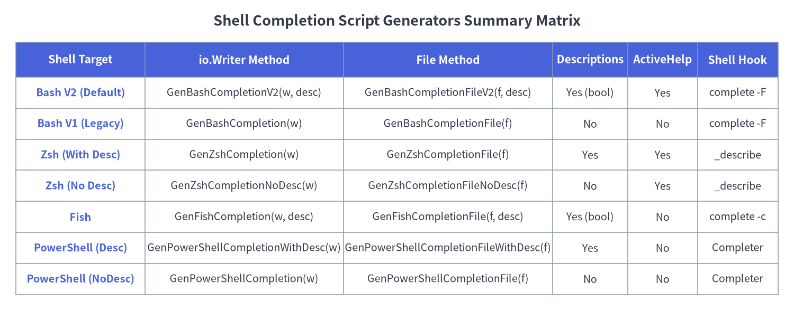

06. Shell Completion Script Generators
Cobra provides built-in autocompletion script generators for Bash (V2 and Legacy V1), Zsh, Fish, and PowerShell (completions.go, bash_completionsV2.go, bash_completions.go, zsh_completions.go, fish_completions.go, powershell_completions.go, and shell_completions.go). Applications can expose these generators automatically via the built-in completion subcommand (InitDefaultCompletionCmd) or invoke the Gen*Completion* methods directly on the root *cobra.Command during release packaging.

Source Code
from drawlib.canvas import save, setup
from drawlib.icons import phosphor
from drawlib.lines import line
from drawlib.smartarts import CardList, Panel
from drawlib.styles import Styles
setup(width=148, height=58, dpi=150)
# 1. Left Panel: Generator Entrypoints
p1 = Panel(
"1. Entrypoints",
"CLI / API",
style=Styles.PrimaryNeutral,
header_style=Styles.PrimaryFlat,
text_style=Styles.WhiteBold.patch(text_size=11.0),
description_style=Styles.White.patch(text_size=9.5),
header_height=7.5,
icon=phosphor.terminal,
icon_style=Styles.WhiteBold,
)
p1.draw(xy=(3, 4), width=46, height=50)
ix1, iw1, ih1 = p1.get_content_box(xy=(3, 4), width=46, height=50, padding=(2.5, 2.5))
cl1 = CardList(
style=Styles.White,
text_style=Styles.DarkBold.patch(text_size=10.5),
description_style=Styles.Muted.patch(text_size=9.5),
badge_shape="rounded_rect",
badge_style=Styles.PrimaryFlat,
badge_text_style=Styles.WhiteBold.patch(text_size=9.5),
spacing=2.0,
)
cl1.add("InitDefaultCompletionCmd", "Auto-injects completion cmd", badge_text="CMD")
cl1.add("CompletionOptions", "Control flags & descriptions", badge_text="OPT")
cl1.add("Direct Gen* Calls", "Write to io.Writer or file", badge_text="API")
cl1.draw(xy=ix1, width=iw1, height=ih1)
line((49.5, 29), (55.5, 29), arrow_head="->", style=Styles.PrimaryBold)
# 2. Right Panel: 4 Shell Backends
p2 = Panel(
"2. Target Shell Script Generators",
"4 Shells",
style=Styles.Neutral,
header_style=Styles.SecondaryNeutral,
text_style=Styles.SecondaryBold.patch(text_size=11.0),
description_style=Styles.Muted.patch(text_size=9.5),
header_height=7.5,
icon=phosphor.code,
icon_style=Styles.SecondaryBold,
)
p2.draw(xy=(56, 4), width=89, height=50)
ix2, iw2, ih2 = p2.get_content_box(xy=(56, 4), width=89, height=50, padding=(2.5, 2.0))
cl2 = CardList(
style=Styles.White,
text_style=Styles.DarkBold.patch(text_size=10.0),
description_style=Styles.Muted.patch(text_size=9.5),
badge_shape="rounded_rect",
badge_style=Styles.SecondaryNeutral,
badge_text_style=Styles.SecondaryBold.patch(text_size=9.5),
direction="vertical",
spacing=1.5,
)
cl2.add("Bash V2 & Legacy V1", "GenBashCompletionV2(w, includeDesc) -> complete -F", badge_text="BASH")
cl2.add("Zsh Completion", "GenZshCompletion(w) / NoDesc(w) -> #compdef & _describe", badge_text="ZSH")
cl2.add("Fish Completion", "GenFishCompletion(w, includeDesc) -> complete -c <prog>", badge_text="FISH")
cl2.add("PowerShell Completion", "GenPowerShellCompletionWithDesc(w) -> ArgumentCompleter", badge_text="PWSH")
cl2.draw(xy=ix2, width=iw2, height=ih2)
save()
methodCommand.InitDefaultCompletionCmd & SetCompletionCommandGroupID#
During ExecuteC(), Cobra automatically calls c.InitDefaultCompletionCmd(args...) on the root command to register the built-in completion command with four subcommands: completion bash, completion zsh, completion fish, and completion powershell.
Go Signatures#
// InitDefaultCompletionCmd adds a default 'completion' command to c.
// This function will do nothing if any of the following is true:
// 1- the feature has been explicitly disabled by the program,
// 2- c has no subcommands (to avoid creating one),
// 3- c already has a 'completion' command provided by the program.
func (c *Command) InitDefaultCompletionCmd(args ...string)
// SetCompletionCommandGroupID sets the group id of the completion command.
func (c *Command) SetCompletionCommandGroupID(groupID string)
Guard Conditions & Subcommand Mapping#
- Opt-Out & Override Guards:
InitDefaultCompletionCmdreturns immediately without modifying the command tree if:c.CompletionOptions.DisableDefaultCmdistrue, orcalready contains a child command whoseName()or alias is"completion", orchas no real subcommands (excludinghelpand__complete) andargsis not actively invoking or completingcompletion(preventing root-only CLI tools from unexpectedly becoming subcommand-based).
- Generated Subcommands & Underlying Generator Calls:
completion bash-> callscmd.Root().GenBashCompletionV2(out, !noDesc)completion zsh-> callscmd.Root().GenZshCompletion(out)(orGenZshCompletionNoDesc(out)when--no-descriptionsis passed)completion fish-> callscmd.Root().GenFishCompletion(out, !noDesc)completion powershell-> callscmd.Root().GenPowerShellCompletionWithDesc(out)(orGenPowerShellCompletion(out)when--no-descriptionsis passed)
- Command Grouping: Calling
rootCmd.SetCompletionCommandGroupID("group-id")assigns the auto-generatedcompletioncommand to a registeredcobra.Groupin--helpoutput.
methodBash Completion Generators (V2 & Legacy V1)#
Cobra offers two distinct Bash completion generators: Bash V2 (bash_completionsV2.go, recommended and used by completion bash) and Bash V1 (bash_completions.go, legacy static code generator).
Go Signatures#
// GenBashCompletionV2 generates Bash completion file version 2
// and writes it to the passed writer.
func (c *Command) GenBashCompletionV2(w io.Writer, includeDesc bool) error
// GenBashCompletionFileV2 generates Bash completion version 2.
func (c *Command) GenBashCompletionFileV2(filename string, includeDesc bool) error
// GenBashCompletion generates bash completion file and writes to the passed writer.
func (c *Command) GenBashCompletion(w io.Writer) error
// GenBashCompletionFile generates bash completion file.
func (c *Command) GenBashCompletionFile(filename string) error
Bash V2 vs. Legacy V1 Comparison#
| Aspect | Bash V2 (GenBashCompletionV2*) |
Legacy Bash V1 (GenBashCompletion*) |
|---|---|---|
| Source File | bash_completionsV2.go |
bash_completions.go |
| Architecture | Thin shell adapter (~425 lines) that delegates all logic to <prog> __complete (or __completeNoDesc). |
Monolithic generated script containing static Bash functions (_<prog>_<subcmd>()) for every command and flag. |
| Completion Descriptions | Supported (includeDesc = true formats choice (description) aligned to $COLUMNS). |
Not supported (descriptions after \t are stripped). |
| ActiveHelp Support | Supported on double-<TAB> (COMP_TYPE == 63) or menu-complete (37 / 42). |
Disabled (<PROG>_ACTIVE_HELP=0 is forced when calling Go custom completions). |
BashCompletionFunction |
Ignored (use ValidArgsFunction and RegisterFlagCompletionFunc in Go). |
Injects raw Command.BashCompletionFunction string and MarkFlagCustom (BashCompCustom) hooks. |
| Dependencies | Works with or without bash-completion package (includes fallback ___init_completion). |
Strongly relies on bash-completion helper functions. |
methodZsh Completion Generators#
Defined in zsh_completions.go, Cobra's Zsh generators produce a #compdef <prog> completion file that invokes <prog> __complete (or __completeNoDesc) and feeds results into Zsh's native _describe, _arguments, and compadd -x (for ActiveHelp) builtins.
Go Signatures#
// GenZshCompletion generates zsh completion file including descriptions
// and writes it to the passed writer.
func (c *Command) GenZshCompletion(w io.Writer) error
// GenZshCompletionFile generates zsh completion file including descriptions.
func (c *Command) GenZshCompletionFile(filename string) error
// GenZshCompletionNoDesc generates zsh completion file without descriptions
// and writes it to the passed writer.
func (c *Command) GenZshCompletionNoDesc(w io.Writer) error
// GenZshCompletionFileNoDesc generates zsh completion file without descriptions.
func (c *Command) GenZshCompletionFileNoDesc(filename string) error
[!IMPORTANT] Method Naming Note (
GenZshCompletionFileNoDesc): Inzsh_completions.go, the file-writing no-description method is namedGenZshCompletionFileNoDesc(filename string) error(FilebeforeNoDesc), whereas in PowerShell it is namedGenPowerShellCompletionFileWithDesc. Sometimes external guides refer toGenZshCompletionNoDescFile, but the exact exported identifier in Cobra v1.10.2 isGenZshCompletionFileNoDesc.
deprecated MarkZshCompPositionalArgumentFile & MarkZshCompPositionalArgumentWords#
// Deprecated: MarkZshCompPositionalArgumentFile only worked for zsh and its behavior was
// not consistent with Bash completion. It has therefore been disabled (no-op returning nil).
func (c *Command) MarkZshCompPositionalArgumentFile(argPosition int, patterns ...string) error
// Deprecated: MarkZshCompPositionalArgumentWords only worked for zsh. It has therefore
// been disabled (no-op returning nil).
func (c *Command) MarkZshCompPositionalArgumentWords(argPosition int, words ...string) error
- Both methods are no-ops returning
nilin Cobra v1.10.2. - Migration Path: Use
ValidArgsFunctionreturningShellCompDirectiveFilterFileExt(for positional file globbing) or returning candidate words for specificlen(args)positions across all shells.
methodFish Completion Generators#
Defined in fish_completions.go, the Fish generator registers complete -c <prog> rules that call <prog> __complete (when includeDesc is true) or <prog> __completeNoDesc (when includeDesc is false), caching results per keypress in $__<prog>_perform_completion_once_result.
Go Signatures#
// GenFishCompletion generates fish completion file and writes to the passed writer.
func (c *Command) GenFishCompletion(w io.Writer, includeDesc bool) error
// GenFishCompletionFile generates fish completion file.
func (c *Command) GenFishCompletionFile(filename string, includeDesc bool) error
Fish-Specific Mechanics#
- Order Preservation (
ShellCompDirectiveKeepOrder): Generated Fish scripts register two conditionalcompleterules—one without-kand one withcomplete -k -c <prog>triggered when(directive / 32) % 2 != 0. - Single-Match
NoSpaceTrick: Because Fish automatically appends a space unless a completion ends in[@=/:.,], whenShellCompDirectiveNoSpaceis set and exactly 1 candidate matches, the generated script emits both$compand$comp.so Fish expands the prefix without adding a trailing space. - ActiveHelp Disabled: Fish scripts automatically prefix the command invocation with
<PROG>_ACTIVE_HELP=0.
methodPowerShell Completion Generators#
Defined in powershell_completions.go, the PowerShell generators emit a [scriptblock] registered via Register-ArgumentCompleter -CommandName '<prog>' (requiring PowerShell v5.0+).
Go Signatures#
// GenPowerShellCompletionWithDesc generates powershell completion file with descriptions
// and writes it to the passed writer.
func (c *Command) GenPowerShellCompletionWithDesc(w io.Writer) error
// GenPowerShellCompletionFileWithDesc generates powershell completion file with descriptions.
func (c *Command) GenPowerShellCompletionFileWithDesc(filename string) error
// GenPowerShellCompletion generates powershell completion file without descriptions
// and writes it to the passed writer.
func (c *Command) GenPowerShellCompletion(w io.Writer) error
// GenPowerShellCompletionFile generates powershell completion file without descriptions.
func (c *Command) GenPowerShellCompletionFile(filename string) error
PowerShell Completion Modes & Version Compatibility#
PSReadLineKey Handler Modes: The generated PowerShell completer inspects(Get-PSReadLineKeyHandler | Where-Object {$_.Key -eq "Tab"}).Functionand adapts output formatting to all three modes:Complete(Bash-like): Aligns descriptions in parenthesesname (description)when multiple candidates match; strips description when a single candidate matches.MenuComplete(Zsh-like): Passes$comp.Descriptionas theToolTipargument of[System.Management.Automation.CompletionResult]::new(...).TabCompleteNext(Windows default): Cycles through$comp.Namevalues on each<TAB>press.
- PowerShell 7.2 / 7.3+ Native Argument Passing: Handles empty trailing arguments (
""vs`"`") across both legacy PowerShell (< 7.2) and modernPSNativeCommandArgumentPassing.

Source Code
from drawlib.canvas import save, setup
from drawlib.smartarts import Table
from drawlib.styles import Colors, Styles
from drawlib.text import text
setup(width=148, height=58, dpi=150)
text(
(74, 54),
"Shell Completion Script Generators Summary Matrix",
style=Styles.DarkBold.patch(text_size=13.0),
)
tbl = Table(
cell_style=Styles.White,
text_style=Styles.Dark.patch(text_size=10.0),
header_cell_style=Styles.PrimaryFlat,
header_text_style=Styles.WhiteBold.patch(text_size=10.5),
border_style=Styles.MutedThin,
)
rows = [
["Shell Target", "io.Writer Method", "File Method", "Descriptions", "ActiveHelp", "Shell Hook"],
["Bash V2 (Default)", "GenBashCompletionV2(w, desc)", "GenBashCompletionFileV2(f, desc)", "Yes (bool)", "Yes", "complete -F"],
["Bash V1 (Legacy)", "GenBashCompletion(w)", "GenBashCompletionFile(f)", "No", "No", "complete -F"],
["Zsh (With Desc)", "GenZshCompletion(w)", "GenZshCompletionFile(f)", "Yes", "Yes", "_describe"],
["Zsh (No Desc)", "GenZshCompletionNoDesc(w)", "GenZshCompletionFileNoDesc(f)", "No", "Yes", "_describe"],
["Fish", "GenFishCompletion(w, desc)", "GenFishCompletionFile(f, desc)", "Yes (bool)", "No", "complete -c"],
["PowerShell (Desc)", "GenPowerShellCompletionWithDesc(w)", "GenPowerShellCompletionFileWithDesc(f)", "Yes", "No", "Completer"],
["PowerShell (NoDesc)", "GenPowerShellCompletion(w)", "GenPowerShellCompletionFile(f)", "No", "No", "Completer"],
]
tbl.set_style_cell_evenodd(
even_color=Colors.Light,
even_text_style=Styles.Dark.patch(text_size=9.5),
odd_color=Colors.White,
odd_text_style=Styles.Dark.patch(text_size=9.5),
)
tbl.set_style_cell_header(
background_color=Colors.Primary,
text_style=Styles.WhiteBold.patch(text_size=10.0),
)
tbl.set_style_cell(
background_color=Colors.Light,
text_style=Styles.PrimaryBold.patch(text_size=9.5),
rows=[1, 2, 3, 4, 5, 6, 7],
columns=[0],
)
tbl.draw_flexible(
xy=(3, 50),
column_widths=[24, 37, 39, 14, 13, 15],
row_heights=[6.5, 5.8, 5.8, 5.8, 5.8, 5.8, 5.8, 5.8],
data=rows,
align="top_left",
)
save()
funcDeclarative Flag Completion Helpers (shell_completions.go)#
In addition to dynamic RegisterFlagCompletionFunc callbacks, shell_completions.go and bash_completions.go export declarative helpers and annotation keys for common flag completion patterns:
Go Signatures & Annotation Constants#
// Annotations for Bash and cross-shell completion (bash_completions.go)
const (
BashCompFilenameExt = "cobra_annotation_bash_completion_filename_extensions"
BashCompCustom = "cobra_annotation_bash_completion_custom"
BashCompOneRequiredFlag = "cobra_annotation_bash_completion_one_required_flag"
BashCompSubdirsInDir = "cobra_annotation_bash_completion_subdirs_in_dir"
)
// Command methods & package-level FlagSet functions (shell_completions.go)
func (c *Command) MarkFlagRequired(name string) error
func (c *Command) MarkPersistentFlagRequired(name string) error
func MarkFlagRequired(flags *pflag.FlagSet, name string) error
func (c *Command) MarkFlagFilename(name string, extensions ...string) error
func (c *Command) MarkPersistentFlagFilename(name string, extensions ...string) error
func MarkFlagFilename(flags *pflag.FlagSet, name string, extensions ...string) error
func (c *Command) MarkFlagDirname(name string) error
func (c *Command) MarkPersistentFlagDirname(name string) error
func MarkFlagDirname(flags *pflag.FlagSet, name string) error
func (c *Command) MarkFlagCustom(name string, f string) error
func MarkFlagCustom(flags *pflag.FlagSet, name string, f string) error
Custom completion Command Implementation Example#
If you need custom flags or behavior beyond InitDefaultCompletionCmd, you can implement a custom completion command that calls the generator methods directly:
package main
import (
"os"
"github.com/spf13/cobra"
)
func newCustomCompletionCmd() *cobra.Command {
return &cobra.Command{
Use: "completion [bash|zsh|fish|powershell]",
Short: "Generate shell autocompletion script",
ValidArgs: []cobra.Completion{"bash", "zsh", "fish", "powershell"},
Args: cobra.MatchAll(cobra.ExactArgs(1), cobra.OnlyValidArgs),
RunE: func(cmd *cobra.Command, args []string) error {
root := cmd.Root()
out := cmd.OutOrStdout()
switch args[0] {
case "bash":
return root.GenBashCompletionV2(out, true)
case "zsh":
return root.GenZshCompletion(out)
case "fish":
return root.GenFishCompletion(out, true)
case "powershell":
return root.GenPowerShellCompletionWithDesc(out)
default:
return os.ErrInvalid
}
},
}
}
Cross-References#
- 05. Dynamic Completions, Directives & ActiveHelp —
CompletionFunc,ShellCompDirective,RegisterFlagCompletionFunc, andAppendActiveHelp. - 03. Flags, FlagSets & Relational Groups — Flag annotations and relational group constraints.
- 08. Documentation Generation (
cobra/doc) — Generating Markdown, Man, ReST, and YAML reference files alongside shell scripts during release builds.